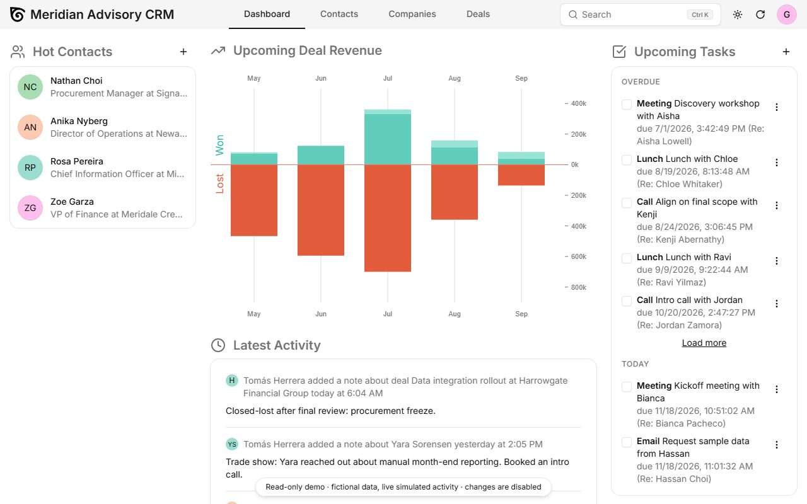

CRM · built on Atomic CRM
Meridian Advisory
A B2B firm selling operations-analytics software and services to mid-market companies. Six simulated team members work about five hundred accounts: leads arrive in business hours, deals move through the pipeline with notes, tasks and follow-ups, and won customers come back for expansions.
- Own API and PostgreSQL database, real-time updates in the browser
- Search, team invitations, password management, record merge, attachments
- 22 integrity checks on the generated data
